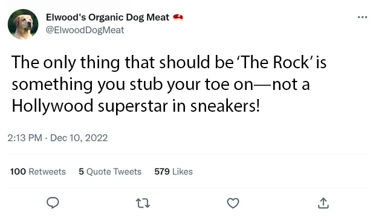

Dwayne “The Rock” Johnson, a well-known celebrity for his acting and wrestling career in the WWF (now known as WWE), is facing cancellation after revealing in a recent interview that he is NOT a rock.
This revelation has angered thousands of users on Twitter, now rebranded as X. Fans flooded the platform, accusing Johnson of perpetrating a geological deception. One fan fumed, “How can he call himself ‘The Rock’ and then claim not to be igneous, sedimentary, or metamorphic?”
Another wrote, “I spent years thinking Dwayne Johnson was part boulder, only to find out he’s just a human? Outrageous!”
A third critic added, 
The fallout has been swift. Several of Johnson’s sponsors have reportedly paused campaigns, fearing backlash from consumers who feel betrayed by the superstar’s lack of mineral identity. Meanwhile, geologists have called for Johnson to be “reclassified,” with some even proposing a new category: “human-adjacent metamorphic entity.”
Adding fuel to the fire, a grassroots movement titled #StoneColdTruth has emerged, pushing for Johnson to issue a formal apology to “every pebble, boulder, and cliff face misrepresented by his false identity.” Outside Universal Studios, a small but vocal group of protesters carried signs reading “Rock or Resign” and “Pebbles Before Profits.”
Even comedian Kevin Hart, Johnson’s longtime friend and frequent co-star, expressed heartbreak upon learning the truth. In an emotional Instagram Live, Hart admitted he felt “personally deceived,” saying he always believed Johnson was “at least 40 per cent granite.” Fighting back tears, Hart added, “I stood next to him for years, thinking I was working with a literal boulder. To find out he’s just… flesh and bone? It changes everything.”

The situation reached a new level of absurdity as Johnson’s team scrambled to manage the PR storm. In his mansion, Johnson reportedly held emergency strategy sessions with his manager and advisors, brainstorming ways to reassure the public. Mock experts suggested releasing a video statement or even digitally replacing him with a CGI boulder in upcoming films to “restore audience trust.”
Fans began trending hashtags like #CancelTheRock, #StoneColdTruth, and, eventually, #LetsGrowTogether, as some users tried to steer the conversation toward forgiveness and understanding. One fan, Lisa, a longtime supporter of Johnson, expressed a mixture of disbelief and hope: “I felt betrayed, but seeing him respond shows he can still connect with fans… even if he’s not made of granite.”
Despite the uproar, Johnson maintained a calm online presence. He posted a cryptic Instagram story featuring only a slab of granite with the caption: “Still solid. Still standing.” Analysts predict this may be a strategic move to preserve his “rock-like reputation” without actually being a rock.
Whether the world will forgive him for not being composed of silicate minerals remains uncertain. For now, Dwayne Johnson faces a new kind of challenge: surviving as “just a guy” in a world that apparently expected him to be a geological formation. Yet, amid satire, protests, and hashtags, one thing is clear—social media has turned a simple admission into a full-blown cultural phenomenon, testing the limits of celebrity, fandom, and mineral identity.